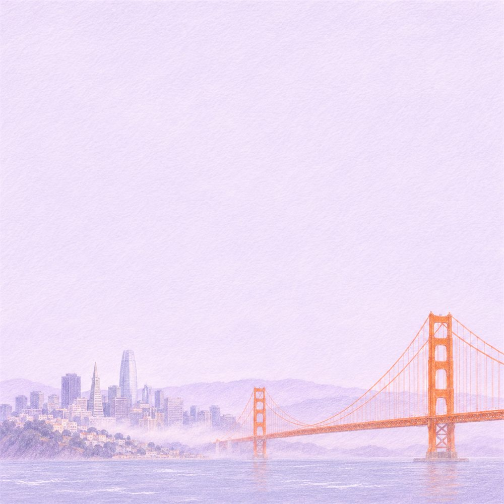
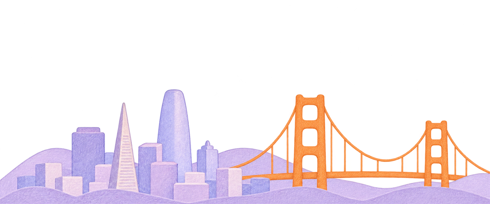
How I created the landing page, the LinkedIn post and the T-shirt for Pi at CyberSec 2027, and where I used AI along the way.
I studied Pi's website, other cyber security companies and Pinterest. I wanted everything to feel like Pi, with a new story about the event.
My main reference: the mammoth, the illustrations, the colors and the fonts.
How other security companies present themselves at conferences.
Ideas for illustration, motion and merch.
I put Pi's mammoth in a small plane. It became the main character of the whole campaign. Here is why:
Pi's message is about speed: "Security moves fast. So do we." A plane shows that right away.
The conference is in San Francisco, and many people fly in for it.
Everyone in San Francisco can look up, see the plane and learn that Pi is at the conference.
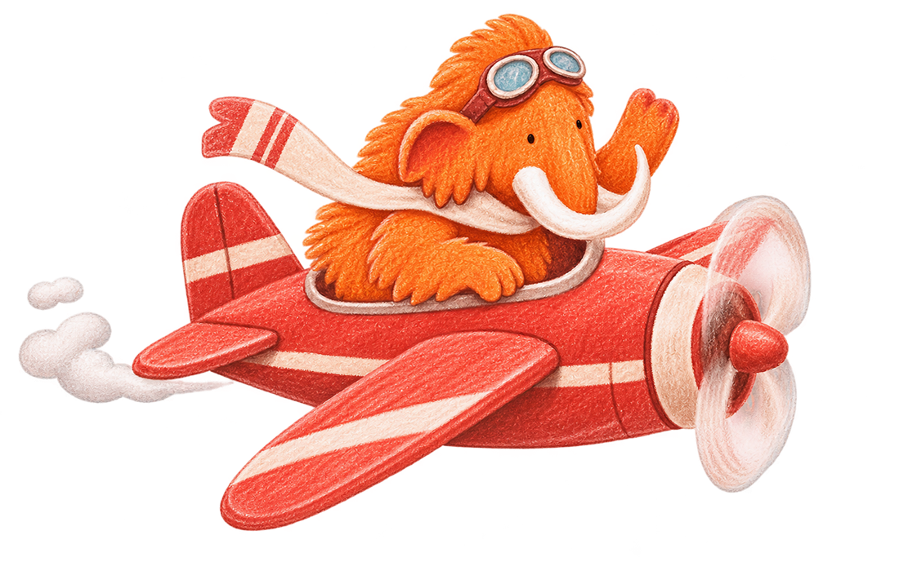
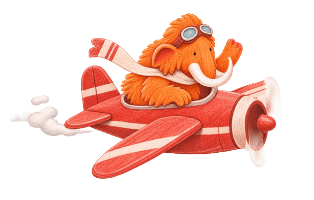
I used illustrations from Pi's website as a base and asked ChatGPT to create similar ones.
The first version had only mountains. I added more details, and in the end turned it into a GIF with moving flags, for a nicer experience.
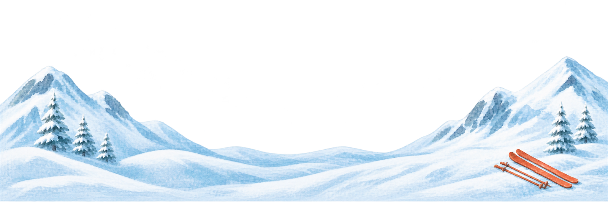
First versionFinal GIFBefore the event details, I added a short section that explains what Pi does.
My first idea was a spiral being broken, to show getting out of the cycle of bugs that keep coming back.
In the end I used Pi's line about speed and building, so I changed the graphic to the mammoth building an igloo.
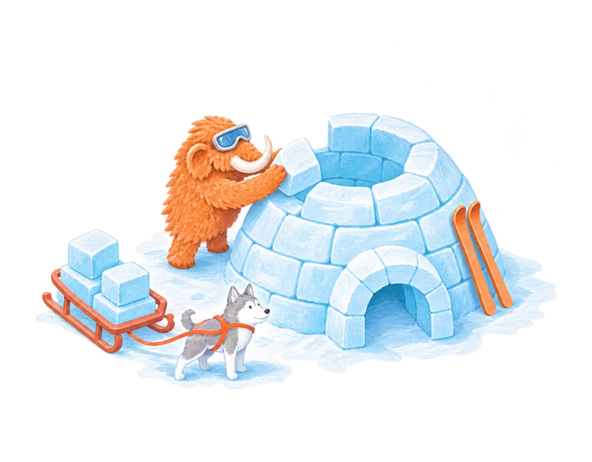
Final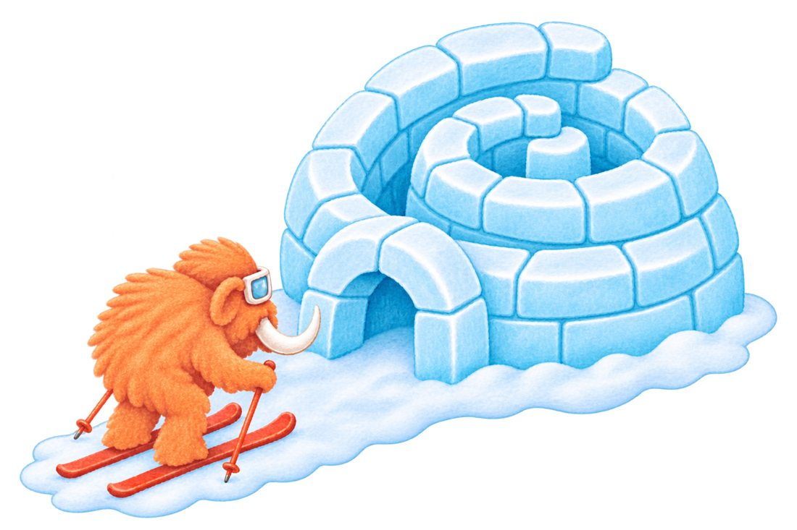
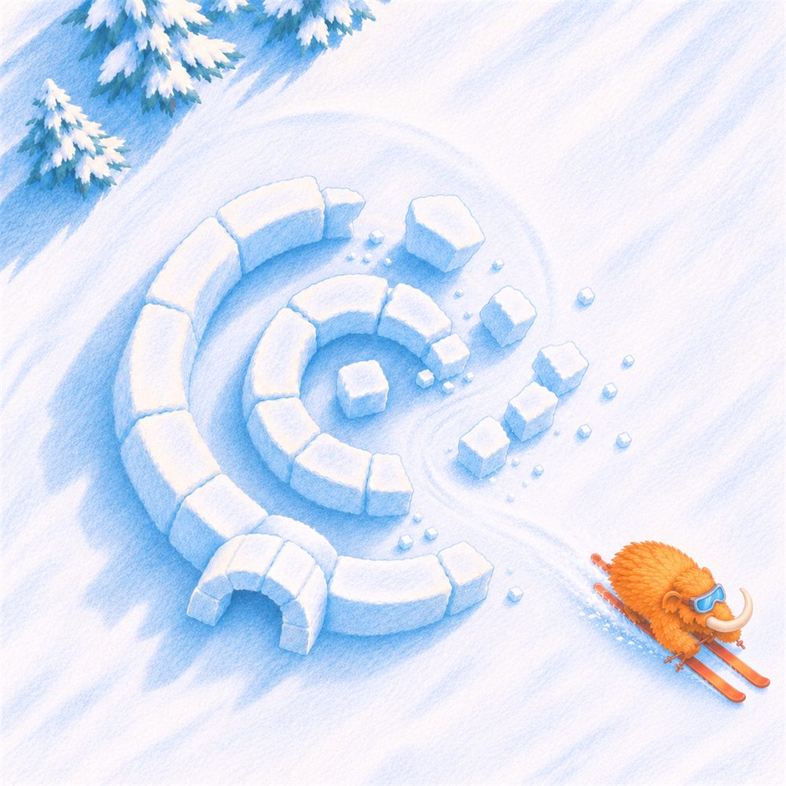
Built on Pi's website: its fonts, colors and illustration style, with a new hero.
The whole site was built with Claude Code.
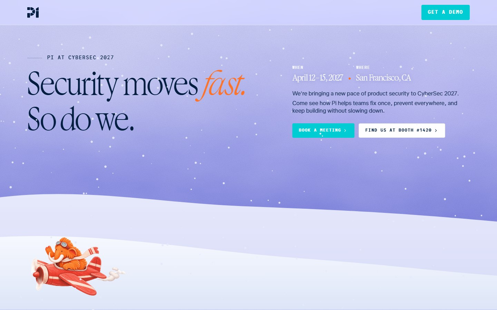
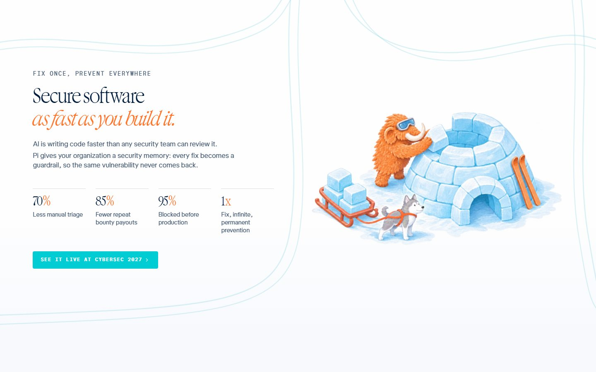
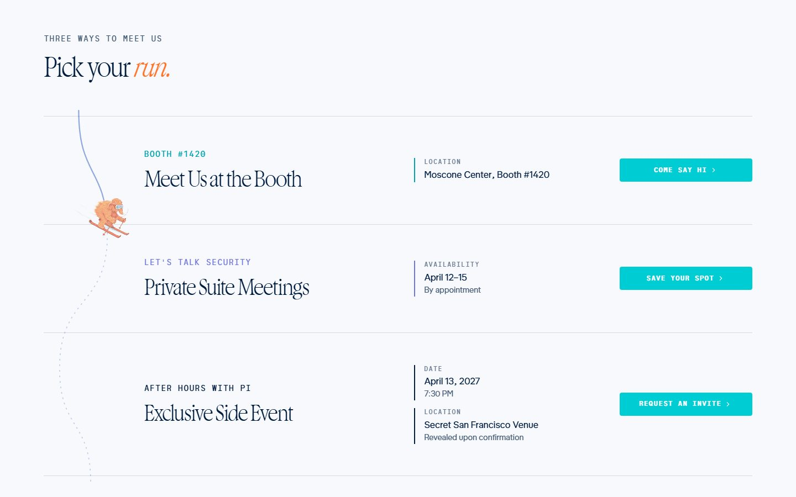
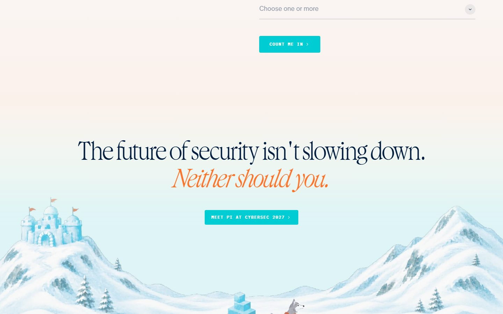
Everything was adapted for phones, so the page looks good and the experience stays smooth there too.
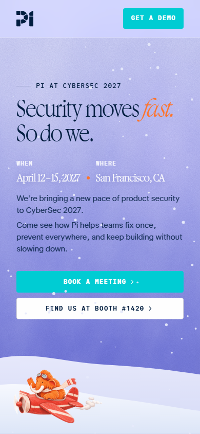
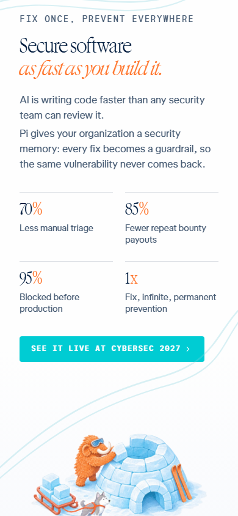
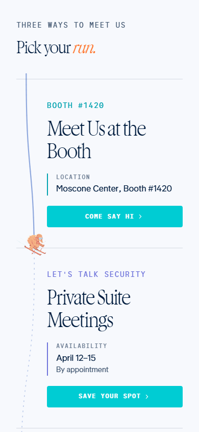
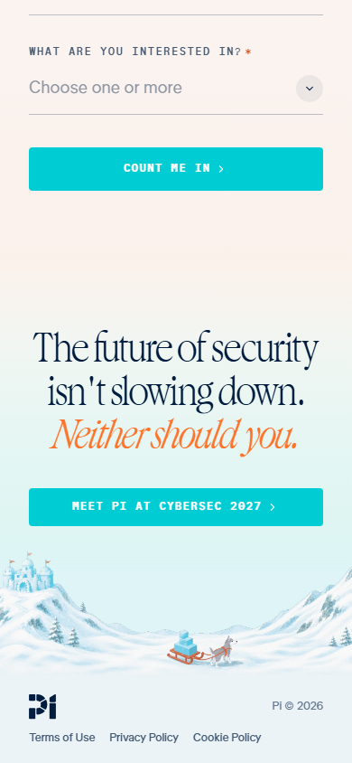
The pilot flies over San Francisco with a banner, so the whole city hears about the event. The flight brings back the feeling of speed.


I wanted a shirt people would like to wear after the event too.
Instead of Pi's usual illustrations, I made small patch-style graphics of Pi's characters with ChatGPT, around Pi's line "Secure software as fast as you build it."
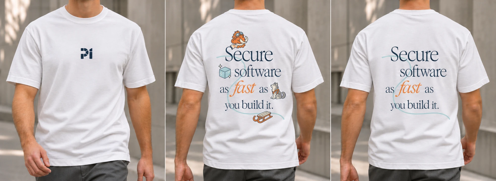


Most of the time went into creating the graphics. After that, I fitted everything into the landing page.
The post and the T-shirt took less time, because most of the base was already there.
The pilot, the winter scene, the igloo, San Francisco and the patches.
Fitting all the graphics into the page, on desktop and mobile.
Built on what I already had.
I used AI along the way to create images, try ideas and build the site.
Created most of the images on the site.
Building the whole site, the GIF frames and the LinkedIn animation.
Testing motion for the igloo idea. I didn't use it in the end.
I looked for inspiration, came up with the ideas and wrote detailed prompts. I kept refining them until each result matched what I had in mind.
Eden NisuyeveHome Assignment
This guide works best sideways.